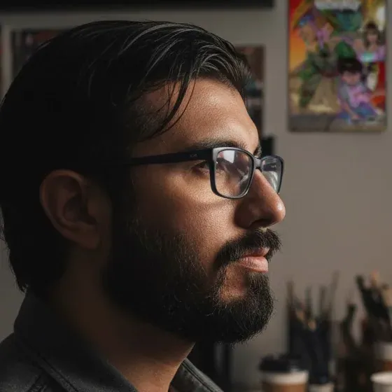

Sobre mí
Soy Eduardo Yair Pérez Trujillo, Yair Artz: artista plástico y digital, autor de cómic y docente. Creador multidisciplinario de San Luis Potosí, egresado de la licenciatura en Artes Plásticas tras formarme en el Instituto Potosino de Bellas Artes.

Trayectoria
Desde 2014 me dedico de lleno a la narrativa gráfica. Empecé con Koatl el Defensor, el primer superhéroe potosino y huasteco, cuya historia ya trascendió el cómic para convertirse en videojuego, artbooks y contenido digital. En 2016 diseñé e ilustré Choque de Héroes, un juego de cartas coleccionables con 480 cartas únicas, el TCG más extenso desarrollado en México.
En el entretenimiento interactivo colaboré como concept artist y diseñador de personajes con Oribe Ware, estudio de videojuegos de Pachuca, Hidalgo, diseñando personajes, escenarios e ítems para producciones independientes.
En noviembre de 2024 inauguré en el Palacio Municipal de San Luis Potosí la exposición “10 años de Koatl el Defensor”, con una conferencia sobre la génesis del personaje, dentro del Festival Internacional Letras en San Luis. Soy ganador del PECDA 2025 en narrativa gráfica, categoría “creador con trayectoria”.
Docencia
Combino la enseñanza con la creación artística desde 2009. Di talleres de arte en el Colegio Valladolid y cursos de ilustración digital y anatomía en la Escuela Estatal de Artes Plásticas. En 2019 impartí “Introducción a la ilustración digital” en el Centro Universitario de las Artes (CUART) de la UASLP.
Después coordiné la carrera de Diseño y Animación Digital en la Universidad Tecnológica Metropolitana de San Luis Potosí hasta inicios de 2025, impulsando planes de estudio y proyectos interdisciplinarios. Hoy imparto materias de diseño gráfico y desarrollo de videojuegos en la Universidad Cuauhtémoc y la Universidad Potosina.
En el escenario
He sido conferencista y expositor en siete ediciones de la FIL Guadalajara; en convenciones como Conque, ECOM y Otak-On, hablando de la convergencia entre cómic y videojuego; y en foros académicos como el Videogame Showcase de la Universidad Cuauhtémoc y la UASLP. En 2023 fui jurado del Tercer Concurso Nacional de Historietas por la Igualdad.
2026 en eventos
Rhinocon, Querétaro
Estuvimos en Rhinocon, la nueva convención de gaming y anime de Querétaro, por invitación de sus organizadores. Llevamos Choque de Héroes, los cómics y el remaster del videojuego, Koatl The Defender ULTIMATE, que Seashell Studio prepara para su lanzamiento en consolas. Gracias a Herman por acompañarme en el viaje.
Exposición del Colectivo Monero, FELEAL 2026
El 19 de abril expuse como parte del Colectivo Monero en la Feria de la Lectura y el Arte Local (FELEAL) de San Luis Potosí, en el Atrio del Centro Cultural del Museo del Virreinato. La jornada incluyó un homenaje a la caricatura, la historieta y la ilustración potosinas.
Fue un honor compartir galería con tantos artistas de gran trayectoria, y hacer un crossover con Luis Gantús: editor, traductor, investigador y divulgador de la historieta mexicana desde hace más de tres décadas, director de la convención Conque, biógrafo de Sixto Valencia y autor de libros sobre Sergio Aragonés y Germán Butze. Su Acervo Gantús-Valencia es considerado uno de los archivos más completos del cómic nacional.
Conferencias
He compartido mi experiencia en conferencias, charlas y ponencias sobre el cruce entre arte, narrativa e innovación digital: el cómic como expresión cultural, el proceso creativo en la industria del entretenimiento y la evolución del arte digital en los videojuegos.
2026
2025
2024
2023
2022
2015–21
2014
Cursos y talleres
Talleres de narrativa gráfica en línea y de ilustración digital para artistas.
En 2025 impartí el taller de ilustración digital para artistas en el Centro de las Artes de San Luis Potosí y abrí grupos en línea de narrativa gráfica: aprende a crear tu propio cómic o manga y contar una historia con imágenes, con las herramientas para completarlo y publicarlo.
En la prensa
Notas y entrevistas sobre mi trabajo, de la más reciente a la más antigua.
- Koatl, el defensor: el superhéroe potosino que luchó contra el olvido Alcantarilla, marzo 2026
- Presentan cómic sobre la magia del Xantolo en la Feria Nacional del Libro UASLP El Universal San Luis Potosí, marzo 2026
- “Koatl”, el superhéroe de Yair Artz, llega en cómic a la Feria del Libro de la UASLP El Universal San Luis Potosí, marzo 2026
- Presentarán “Koatl, el Defensor: Convergencia Latina” en Miércoles Literario Código San Luis, 2025
- Koatl el Defensor deslumbra en el Festival Internacional Letras Plano Informativo, noviembre 2024
- Koatl el Defensor brilla en el XVII Festival Internacional Letras en San Luis Metrópoli San Luis, noviembre 2024
- Yair Artz presentará su cómic Koatl el Defensor en el XVII FILSLP Medias Tintas SLP, noviembre 2024
- Se presentará el cómic potosino Koatl el Defensor en el Festival Letras en San Luis Potosinoticias, noviembre 2024
- “Koatl el defensor”, el superhéroe potosino El Sol de San Luis, 2024
- Yair Artz: en México no hay una industria del cómic La Jornada, agosto 2023
- El cómic Koatl el Defensor prepara su debut en videojuego La Jornada, marzo 2022
- “Koatl el Defensor: Los túneles perdidos”, videojuego 100 % mexicano Gaceta UAEH
- Los Túneles Perdidos en Game Effect Revista Game Effect, año 2 núm. 5
- “Koatl el Defensor”, un superhéroe potosino El Universal San Luis Potosí, junio 2019
- Cómic aborda el incendio de la sierra de San Miguelito Metrópoli San Luis, mayo 2019
- Koatl el Defensor, superhéroe potosino (video) Código San Luis
- Koatl rescata el lado cool de los aztecas El Universal
- Urgen héroes nacionales El Universal Querétaro
- Koatl, el superhéroe potosino Metrópoli San Luis, febrero 2015
Entrevistas
El arte del cómic, Pokémon y Koatl: El Trazado #9
Creaciones y creadores, temporada 2, episodio 12 (DewordNews)
Arte Geek, canal BITME
“Koatl el Defensor”, un superhéroe potosino (El Universal San Luis Potosí)
Un superhéroe en la Huasteca Potosina (Rompeviento TV)
Entrevista con Yair de Koatl (Geekstrs)
Reto Tecmilenio SLP: entrevista a Yair Pérez
Entrevista a Yair PT, parte 1 (La Viñeta Errante)
Entrevista a Yair PT, parte 2 (La Viñeta Errante)
Koatl el Defensor en El Celuloide
Encuentro de Creadores de Cómic 2016
Presentación del libro Koatl el Defensor